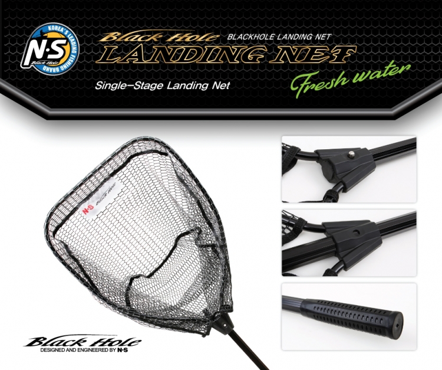

Overwhelming power, extreme durability, and absolute strength faithful to the basics were created.
frame reinforced rotor Targeted fish can be subdued without shakiness of rotor even when strong load is applied. >ineholder / STS Lineholder (No.6000~7000) Adopting the line holder made from highly durable plastic/STS, it reduced abrasion and damage that may be caused by prolonged use. Inclined spool edge Spool edge, processed to be inclining, enables the line discharge without disruption and increases driving distance. Round EVA power knob (corresponding to No. 4000~7000) Adopting the round-shaped power knob preferred the most by the Korean, it provides optimal grip on the material made from premium EVA. Carbon drag pad adoption Adopting the carbon drag pad, it ensures strong drag power and extends the life of drag pad. Double cam gear Adopting the double cam gear which was rare previously, the targeted fish can be subdued safely with powerful pulling force(drag force).
WEAVERON PE 8 BATTLE
Features *The light and smooth line surface reduced friction with guide and minimized twist of line, providing even longer driving distance. *The line, free of discoloration, further increases visibility.
Experience high durability and waterproof performance increasing the convenience of anglers! NAME : TOTE BAG (S) MODEL : WPTT18NS-S MATERIAL : NY420D / TPU SIZE : 40 X 13 X 44cm COLOR : BLACK Retail Price: KRW 70,000 NAME : TOTE BAG (M) MODEL : WPTT18NS-M MATERIAL : NY420D / TPU SIZE : 45 X 15 X 52cm COLOR : BLACK Retail Price: KRW 75,000
FEATURES - 1.Excellent waterproof performance - 2.Inclusion of name tag - 3.Ease of transport and storage - 4.Sufficient space for storage of clothes and equipment - 5.Roll-up type(waterproof zipper & buckle) COUTION ※Carrying heavy objects in the bag may alter the body, or cause the handle or the belt to break, or cause the bottom to break. ※Toppling the bag on its side when it has water in it may lead to leakage. ※The product should be used for any other purpose than fishing. ※Please keep out of direct sunlight, and avoid leaving it in a car on a hot day. ※Please keep out of children’s reach. ※To prevent discoloration or alteration, clean and dry the product after use, and store in a shade with small temperature fluctuation. ※When cleaning the product, please use neutral detergent. Do not use alcohol, thinner, benzene or other organic solvent.
Cross bag with powerful functionality and maneuverability, optimized for fresh water and seawater! NAME : CROSS BAG(S) MODEL : WPCR18NS-S MATERIAL : NY420D / TPU SIZE : 20 X 9 X 21cm COLOR : GRAY Retail Price : KRW 55,000 NAME : CROSS BAG(L) MODEL : WPCR18NS-L MATERIAL : NY420D / TPU SIZE : 27 X 13 X 24cm COLOR : GRAY Retail Price : KRW 60,000
FEATURES - 1.Excellent waterproof performance - 2.Quick and convenient magnetic type - 3.Protection of articles and equipment from moisture - 4.Adoption of D ring and article hanger CAUTION ※Carrying heavy objects in the bag may alter the body, or cause the handle or the belt to break, or cause the bottom to break. ※Toppling the bag on its side when it has water in it may lead to leakage. ※The product should be used for any other purpose than fishing. ※Please keep out of direct sunlight, and avoid leaving it in a car on a hot day. ※Please keep out of children’s reach. ※To prevent discoloration or alteration, clean and dry the product after use, and store in a shade with small temperature fluctuation. ※When cleaning the product, please use neutral detergent. Do not use alcohol, thinner, benzene or other organic solvent.
Zoom Double-Stage Landing Net (Zoom) The N.S Black Hole Landing Net was designed based on ultra-lightweight aluminum material and high durability. It protects the frame of red color and scales of targeted fish. It adopted the honeycomb pattern rubber coated net which is not easily caught on the fishing hook. The wide net with a width of 30cm can hold the large-sized targeted fish easily. The zoom double-stage type can be stored conveniently and is easily portable.
Retail Price : KRW 50,000 COLOR : Red NET DEPTH : 30cm SIZE : 50cm X 35cm MATERIAL : Aluminium Pipe
Double-Stage Landing Net (Salt Water) The N.S Black Hole Landing Net was designed based on ultra-lightweight aluminum material and high durability. It protects the frame of blue color blending well with the sea and scales of targeted fish. It adopted the honeycomb pattern rubber coated which is not easily caught on the fishing hook. The wide net with a width of 40cm can hold the large-sized targeted fish easily. The zoom double-stage type can be stored conveniently and is easily portable.
Retail Price : KRW 70,000 COLORE : Blue NET DEPTH : 40cm SIZE : 50cm X 40cm MATERIAL : Aluminium Pipe

Single-Stage Landing Net (Fresh Water) The N.S Black Hole Landing Net was designed based on ultra-lightweight aluminum material and high durability. It protects the frame of modern black color and scales of targeted fish. It adopted the honeycomb pattern rubber coated net which is not easily caught on the fishing hook. The wide net with a width of 30cm can hold the large-sized targeted fish easily. It can be stored conveniently and is easily portable.
Retail Price : KRW 50,000 COLOR : Black NET DEPTH : 30cm SIZE : 51cm X 41cm MATERIAL : Aluminium Pipe
Basic mode for hairtail jigging Hairtail is targeted by arriving the targeted water depths quickly via exquisite rear central jig based on the 4:6 ratio of the center of gravity. The slender head shape with less resistance reduces fatigue caused by the prolonged fishing during the basic one-pitch jerk action. It is optimized for probing broad layer at a quick pace by curtailing the slide width. It will act as the metal jig dedicated for hairtail in various fields based on the 7 types of performance colors and compact size.
UMBRAGO KODOK The sliding type balance creates more brilliant and splendid ‘Walking-the-Dog’ action, shifting away from monotonous actions of frog fishing. The front and rear-leg skirt of KODOK creates the silhouette of lures during the pause and action, which resembles a frog every much. The tail fitted with small blade produces satisfactory wave, volume, and flash effects at the same time on murky underwater space and thick cover fishing, clearly appealing to the bass. The 18g KODOK is the optimal weight of frog, which enables targeting the points which have not been reached by casting, and was lauded as the best frog during the testing process, finally leading to its launch.
TYPE: Frog WEIGHT : 18g Retail Price : KRW 12,000
Result of 1-year simulation and on-site test by Um Jang-Soo, a professional! UMBRAGO COVER JIG for flipping/casting was launched. It was developed with a focus on more stable casting and action. The silicon skirt in the Cover Jig shows quick diffusion when it is submerged into water. The quick diffusion of skirt creates tremendous appeal during the falling. Dozens of strands of skirts increase the appetite of bass during the jig action. Jig head shows independent action of jig with greater stability based on the design of triangular low-centered exterior and horizontal line eye, highlighting the capability to avoid obstacles in the cover or structure.